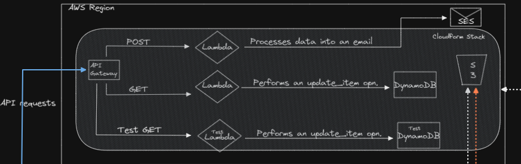

A write-up on the planning, development and operations performed,
inspired by the cloud resume challenge.
Intro
While I was preparing for my solutions architect associate exam, I had
the idea to eventually use the knowledge and the hands on experience I
would gain from studying for the certification to deploy my website over
the cloud and automate every bit of the integration and deployment
process. The idea was there, but it lacked any actual substance, and for
some time, it remained just an idea. That is until I came across the
cloud resume challenge by Forrest brazeal.
This challenge has definitely put every bit of what I studied and
practised in place and definitely the kind of challenge I needed to
atleast get my head around a lot of things, AWS and outside. So without
further ado, lets get in to what I did and how I went about the phases
of this project.
Time Taken
Since there's a lot of moving parts in the project, it definitely took
me a lot of time to get all the parts working together in sync.
Depending on if you take the certification into account, it took me
about
4 months including the
certification preparation (which helped me a lot with the challenge) and
2 months excluding it.
Working with AWS can be daunting at the start. Photo by
Sigmund
on
Unsplash
That value might seem like a lot but it takes into account the time I
put into the front-end code and design, learning the principles and
working of devops tools such as Docker and Gitlab CI/CD since I went
with that, It's only natural to consider the time taken to build it as
well.
Note
The write-up is fairly long as I try to explain the ideas and the
implementation process I went with. So please do take your time in order
to go through it. It's also all in here so don't worry, I will not be
redirecting you to a follow up article.
Architecture
Architecture diagram. Drawn using Excalidraw.
I added a couple extra services in there, modified it to play around a
little more. The core concept of the challenge still remains in place
though and that was always the first thing on my mind. And as we go on
with this write-up, I will do my best to explain what each part of this
architecture hopes to achieve.
Certificate
Starting off with the certificate, I went for the solutions architect
associate and thoroughly enjoyed the coursework and the journey towards
preparing for my exam.
My Associate Badge.
The bits of experience I got from doing some labs and demos as part of
my study definitely helped me get a sense of familiarity with the
console and services when I started with my project. So that's ticked
off.
Website
To kick things off, I decided to go ahead and implement this challenge
with the website that I already had built prior to coming across this
challenge. I built my website using HTML, CSS and ReactJS, a front end
JS framework to build smooth front end applications and therefore
already had the front end parts ready to move on to the next parts of
the challenge. I did come back to polish it further, taking off from
where I had left and since the codebase is a bit old, I do intend on
coming back and rebuilding some parts of the application and cleaning it
up a little bit. Still though, a working front end website and I was
good to go next.
Using EC2, Containers and S3
The first step into the cloud... and the work begins! The idea is to
deploy your static website to S3 and manage the contents of the bucket
yourself. S3 is a great service to use in order to serve your static
content. I did heed to the challenge's instructions to deploy the
website over S3 as a static website endpoint. But as with the previous
step, I did take some inspiration and decided to do something further.
This was something I purely did for the sake of experimentation and
working with more services and tools to really immerse myself in with
the hands-on experience of working with cloud and devops tools.
So...What did I do?
I decided to dockerize my front end application and host the container
instances on an EC2 instance. This helped me learn the fundamentals of
what docker is, why its so coveted and popular in the industry and gain
a working idea into the mechanisms of containerizing applications. I
also decided to use my EC2 instance instead of a container orchestration
service such as Kubernetes or ECS to keep things a little bit simpler
(ironic I know) and because there's about 750 hours of free EC2 instance
running time per month. I also put a little bit of my Linux knowledge
and skills to use. Running containers on a self managed EC2 instance is
very possible and was definitely extremely fun to work with. Initially,
I had provisioned this EC2 instance with Terraform and tried to maintain
it with Terraform but I'd always make the mistake of going to the
console and changing things instead of doing it on my terraform file
(more on that later). Using the Terraform file however, I had
bootstrapped a user script to install docker as soon as my EC2 instance
was provisioned and ideally, I would also like to attach a auto-scaling
group policy to this Instance group which would only provision another
single instance if my current one were to stop functioning as intended
(The values of Min., Desired, and Max Capacity will be 1), since one of
the main ideas behind doing this project was to keep it as cheap as
possible. The docker containers are started as part of my CI/CD pipeline
configuration file and there will be more on that later as well.
Application load balancer, balancing load across the Containers in my
EC2 instance.
Benefits? And what about the ALB?
From an architecture standpoint, there is not much benefit for a static
website such as mine to be containerized and put on an EC2 instance.
Containerization shines when you have to host multiple applications,
dynamic in nature, all having different build and environment
requirements but also needing a shared os amongst them. Docker really
shines there. It really did teach me the benefits of containerizing
applications even if they had very diminished returns on my application
specifically. The load balancer is an Application load balancer and they
are free to use for 750 hours per month as well. Application load
balancers are also great because they are 'intelligent', being able to
use layer 7 logic to route traffic to your instances. Application load
balancers (along with Network load balancers) can also support load
balancing across different ports on the same instance. This was
extremely beneficial for my docker containers and I was able to create a
target group with my containers and the alb would load balance traffic
across them and monitor their health status. I could have gone with a
NLB as well, but in the future, I do intend on using my architecture to
host multiple applications with different request URL's so an ALB is
preferred for that.
CloudFront
CloudFront is the CDN service of AWS. It is important to use cloudfront
for the added advantages of speed and performance, which are made
possible due to cloudfront's edge location caching. It is also
beneficial to use cloudfront in order to make it the single point of
entry to your services and associate a custom domain to it. This secures
access to your resources and also enables you to leverage additional
cloudfront features such as using only HTTPS and associating SSL
certificates to enable HTTPS communication by default between the users
and cloudfront and between cloudfront and its origins. Note that
communication between cloudfront and S3 still happen over HTTP.
Cloudfront with WAF enabled and connected to my Origins.
As I leveraged the use of both an Application Load Balancer and S3, I
decided to create an origin-group in cloudfront to enable origin
failover in the event my EC2 instance or its availability zone were to
go down. S3 would be the backup and would continue serving content to
users. WAF isn't free (and I break the promise of keeping it free) but
it is still extremely cheap to use and identifying the rule set you want
to use will definitely help with defending against attacks and malicious
traffic.
DNS
Bought a domain for myself, again this is a one-off purchase you make
for the year. Created a couple custom dns subdomain alias records for
other AWS services such as S3 and ALB, makes it easier to read and use
them to define your cloudfront origins. It's also required in order to
associate your services with an SSL/TLS certificate (I could be wrong
though, not entirely sure). ACM provides a free SSL/TLS certificate if
you request one.
Javascript
I built the website with the use of ReactJS as already mentioned, but
excluding ReactJS, my code does include some vanilla javascript and as
defined in the challenge, a visitor counter functionality was
implemented in the code (using react hooks). Along with the counter
functionality, I also defined a form which would enable users to send me
messages or contact me for anything. I added this as it was already part
of my original website, but did not have the backend infrastructure and
therefore decided to complete it together with the visitor counter
functionality as part of this challenge as well.
Going through some documentation and tutorials again helped me refresh
my knowledge in asynchronous JS, and it proved to be vital for this part
as most of it revolves around the use of XMLHttpRequest() or the fetch()
API if using React, along with promises and resolutions.
This medium article by James Beswick
helped me a lot in understanding how to integrate the concepts into one
single entity and overall, was a great read.
The Serverless Backend

The Serverless part of my Backend.
To me, this was the part of the challenge I had the most difficulty
navigating in. I don't have much developer knowledge or experience and
most of my knowledge in python comes from basic python scripting from a
networking perspective. And as for my front end code, well most of it is
browser-based Javascript and ReactJS and while nodeJS uses the same
language, by no means was I experienced with it other than using npm.
Due to those limitations, this was also the part I had to seek the most
help for. Primarily on writing the functions, coming up with the logic
and also understanding the integration of lambda functions with API
gateways. I definitely did not explore these services as much as part of
my exam preparation and the gaps in knowledge and implementation ideas
were pretty apparent in the beginning. Nonetheless, I decided to take it
on since it was a chance to learn something new and a challenge look
forward to and as I moved deeper into this part of the challenge, I
definitely started enjoying it a lot more and the services started
becoming a lot clearer to me.
API Gateway
Starting off with API gateways, this was not as bad as I thought it
would be since I already had some knowledge in working with API calls
with some of my front end mini projects and therefore I was able to
grasp the basic idea of what was going on. However I hadn't really
created an API myself before and that was an interesting process to work
with. Also because this was an unfamiliar territory with me, I had
decided to play around with the console once and implement the
functionality manually through the console, but as part of the
challenge, SAM is required to be used and therefore I did redo all of it
through a SAM template (more on this in the IaC section).
With that said, there are still certain things I don't understand with
API gateways, but I learnt a whole lot with this challenge. Implementing
response code in my lambda functions to allow for cors, learning the
differences between proxy, non-proxy and mock integrations, the
heartache of not being able to enable cors on the console, and while
there is a test functionality within the console, I hadn't actually seen
it until later and so I used to test my APIs with Postman and create a
demo event object to pass as an event to my lambda function. Learning to
correct errors such as 500, 502, cors etc was a frustrating experience
at times but I genuinely got a better idea once I worked with it. Also,
remember to add your API as a trigger to your lambda function, sometimes
I had to manually do so through the console, but I'm sure that must be
an error from my part. Really thankful I had decided to take this part
of the challenge on.
Remember to add triggers.
Lambda
Next comes lambda functions, this is where your actual developer or
coding knowledge comes into play as you write the functions and hope for
a proper execution of the functions as well. I was familiar with lambda
itself, but where I had to write the code, I had to refresh some of my
python knowledge and definitely browse through a lot of
stackexchange stackoverflow to gain an idea on how I would go
about it.
Lambda in a fun manner.
This is a nice and intuitive way to get a very high level overview of AWS
lambda on the console where you can sort of play around with the service
and understand for yourself how it functions on the surface level.
Boto3 and nodeJS SDK.
Boto3 is the SDK that you use with python in order to programmatically
communicate with the AWS services. It's pretty neat and I started
getting the hang of it while going through the boto3 documentation but
there are some very basic confusions for newbies like me. For example I
didn't really understand what the difference between boto3.client() and
boto3.resource() was. Boto3.resource() was seemingly the easier to work
with, it provides a high level abstraction of the services and so it's
easier to use. Gaining a little bit of experience using boto3 was
definitely integral in understanding how AWS SDKs interact with the
services itself.
Using stackoverflow and
this blog post by Chris Nagy, I was able to get a much better understanding how to work with AWS
services such as Dynamodb and SES. Using functions defined in the boto3
library, you can manipulate dynamodb tables and perform the desired
operations needed.
Similarly I had to use the nodeJS SDK for my nodeJS lambda function.
With the help of
this blog post by Marcin Wanago, I definitely had a bit of a better understanding working with nodeJS
and building nodeJS lambda functions for my Email service. You process
the incoming event object into an email body, pass it to SES and SES
sends it to you using the details it got from lambda. Pretty neat. Great
experience working with lambda, definitely had some frustrating moments
but when you get the function working as intended, it's always a great
feeling. Onwards we go!
SES and Dynamodb
SES (Simple Email Service)
Amazon SES is a simple email service that uses an amazon server to send
emails to the email address that you have verified on the SES console.
Simply go to the service and verify your email id and you're good to go.
SES will forward any emails that it receives from my lambda function.
There really isn't much else to say about SES, a relatively
straightforward service which functions as intended.
Dynamodb
Dynamodb is a vast topic. It was interesting to work with it even if I
probably explored very little of it. Had some prior knowledge on
databases(SQL and NoSQL) and their features but my experience working
with one was none. Working with it now, I do understand it a bit better
from a hands-on perspective, though I do realise that I've only worked
with one kind of a database here and even within this one kind, there's
a lot to learn so I understand the amount of depth that is in such a
topic. Still though, getting familiar with the schema, learning a lot
about primary keys, indexing and why it's important that you have high
cardinality etc, are all some of the things that you learn when working
with dynamodb. Ofcourse, most of my interaction with dynamodb was
through boto3 and some from the SAM template I wrote to define my
dynamodb table. Overall, good experience and definitely got myself some
basic experience working with dynamodb.
Testing...Not quite..
The tests were a bit of a weak point for me at the start as I wasn't
exactly sure what kind of tests I should be integrating into my CI/CD
pipeline for a static website. Then I read about the testing suite that
comes pre-installed with create-react-app called jest testsuite, which
is a react testing library and you can run tests with jest using the npm
test command. Linter tests and npm test for my front-end were
integrating into my pipeline to test my frontend.
Lambda testing.
Lambda also has a testing feature that you can use in order to test your
functions in the console. Simply create a test event and define a test
object to use for the test. Lambda will do the rest. Other than that,
there are local SAM tests that I ran for my backend with the SAM local
invoke and SAM local API commands to test my lambda functions and API
urls respectively. You can pass the test objects either using the echo
command or you can create a test object locally like I did, and pass it
in the SAM local invoke command. However, there aren't any dedicated
testing scripts for my backend applications and I definitely intend on
writing some test scripts for my backend scripts and therefore, I
consider this part of the project as ongoing and about half complete.
Tooling
Finally, the last section of this write-up. This section mainly talks
about the tools and the process implemented to fully automate whatever I
had done so far. It's a
very important part of what
Devops is about and how it makes Devops principles come to life in
action. One of the most fun parts of the project personally. Lets go.
GitHub, Gitlab and SAM were the tools I used (Honorary mention to
Terraform).
Version Control
Used Github and Gitlab. Initially, I had my frontend code stored in a
github repository but since I decided to use Gitlab for my pipeline
workflow, I decided to create and sync my local, github and gitlab
repositories. Version control is awesome, using git is great and
extremely powerful if used right.
Infrastructure as Code (IaC)
This one is important for a lot of reasons. Infrastructure as code or
IaC is a way to define your resources and manage their configurations
through code. The challenge mentions the use of AWS SAM in order to
provision your serverless backend and manage their configurations as
well. I had studied a bit about cloudformation and creating stacks and
defining templates, but SAM makes the whole process so much easier and
so much smoother too, SAM being an extension of cloudformation.
The Cloudform stack created via SAM.
But that's the serverless backend right? What about the EC2 instance
and the ALB that I had defined earlier? And how did I go about
it?
It's a bit interesting really. So Initially, the plan was to execute it
all using terraform. Terraform is very similar to cloudform and so it
wasn't hard to get into it. I had a lot of fun learning the basics of
terraform, went through hashicorps documentation and tutorials just to
get myself familiar with the language and commands. I had defined both
my ALB and my EC2 instance as part of my Terraform file. However, using
terraform right off the bat was a bit overwhelming for me (even just the
2). It wasn't that terraform was extremely hard or so, personally I
believe it had more to do with the timing of using terraform in my
project. I started implementing IaC quite early into the project as I
believed defining every bit of it in my terraform file would eventually
make it easier to track...which is true in a way but I was lacking in
knowledge with some of the service configuration and without going
through the console and playing around with the services for sometime,
It was hard to know what I exactly needed. Afterall, options give you
ideas and going through them in the console definitely gave me an idea
of what was required.
A valiant effort in trying to maintain my infrastructure. Image by
Pawel Kozera
from
Pixabay
Terraform templates and in general, service templates exist for every
IaC tool out there. These templates give you a baseline configuration
and all the configuration options you will ever need for a service. This
was of great help when I started and definitely started making the
transition to IaC easier. Even though templates provide a great way for
you to understand whats required, I think the best way is to first
provision every bit of infrastucture you'll need via the console.
Configure them via the console as well. Once you have a working model,
abstract them to you preferred choice of IaC tool and then the whole
process is a lot easier to understand.
But what's the benefit in that?
I'll be honest, I couldn’t quite understand the benefits of terraform,
SAM or IaC in general. I was lacking an idea and the understanding as to
why they are considered so important when they are tedious to write and
one small mistake can break your deployments. But a key component in
getting things right is to learn from previous failures and when I
decided to provision my serverless backend using SAM, I decided to first
go through all the options via the console, then provision them with
SAM.
The whole thing hit me like a eureka moment once I had finished defining
my SAM template. I could basically take this template onto any AWS
account, anywhere and get the required resources, configurations,
policies etc running instantly as soon as it is deployed. It started
making a lot more sense to me once I saw how it was maintained as code
and how it could benefit organisations a lot because the complexity of
maintaining organisational infrastructure is probably 20x more
complicated than mine. It’s also extremely portable, you can take them
across cloud platforms as well (if using a cloud-agnostic IaC tool) and
not just that, there are even CDKs for developers to begin with and
manage infrastructure as code. It’s a great tool that started making
much more sense to me once I had defined my template and thought about
it in the grand scheme of things.
Coming back to my project, I want to wrap it up to make a bit of a TLDR
here. I ended up using both SAM and terraform. Terraform however, for
all practical purposes only maintains my EC2's configuration and state
and it is also not part of my CI/CD. SAM, on the other hand was used
after I understood the importance of IaC. SAM was also slightly easier
to learn compared to terraform, I think that is to be expected given
that it is an extension of cloudform specifically for serverless
resources. Learning both Terraform and SAM were crucial in understanding
the concepts of IaC and its importance in the industry. Since some of my
resources are still not part of IaC, I do intend on bringing them into
the mix as well and so even this stage can be further extended to
accommodate for all the resources used in my architecture.
CI/CD (Frontend)
The connector, Continuous Integration & Continuous Deployment(or
Delivery if done manually). Later on in the challenge, but earlier in my
development, this was genuinely one of the most exciting parts of the
challenge. It's amazing how with the push of a button, all the changes
you make locally will enable the running of a pipeline you built,
responsibly delivering your code to your remote instances. Truly
magnificent.
A successful pipeline marks the ultimate connection between all parts
of the project. Image by
jotoya
from
Pixabay
Now when I started this part, I wasn't looking at the tooling required
in the challenge. As I mentioned, I had already begun with the process
early on, building my pipeline file when I had a functioning EC2
instance running.
The challenge actually specifically asks us to use GitHub actions, but I
realised it all a tad bit late and I had already begun working with
Gitlab. Atleast they're both git right?... But on the more serious side,
learning CI/CD was a challenge. Understanding the stages, understanding
the jobs and not just that, understanding the architecture behind how
pipelines actually deploy code are all vital to understanding CI/CD.
The pipeline file for my frontend was divided into 4 stages with a total
of 5 jobs. Each stage can be defined with an image that will be used to
execute your script. My pipeline stages consisted of a build, packaging,
testing and deployment. The build artifact created would be downloaded
to my Deploy stage and it would automatically be deployed to my S3
bucket. Deploying to my EC2 instance was a bit trickier and this took me
a considerable amount of time to get it working.
This document on Gitlab
came in extremely handy. A script on my EC2 instance would be run to
basically stop the current containers everytime a new deploy stage was
initiated and the script would provision two new containers with the
latest image that would be uploaded to my container registry.
Pipeline on Gitlab CI.
Some of the practices I learnt were to use official and verified images,
using images that were smaller in size so your pipeline execution times
would be lowered. Using environment variables wherever you can in your
pipeline structure is recommended. Gitlab also has a feature called
predefined variables which can be used in your pipeline to reference
variables native to Gitlab such as project Id, authentication variables
to authenticate into Gitlab and so on. There's a huge list of them and
it's definitely a good practice to incorporate them. I learnt how to
install the Gitlab runner service as well and use my own pc as a runner
for some specific jobs which required deployment. Reading through the
documentation in Gitlab, I learnt a lot of things, also referred to
online tutorials and finally was happy with the implemetation of my
pipeline. There's still definitely a lot of improvements I could come up
for the pipeline, but it does the job decently and I'm happy with the
execution.
CI/CD (Backend)
The CI/CD process for my backend is to mainly provision the serverless
infrastructure and so this pipeline was a lot simpler to setup. Once my
SAM template was defined and locally tested, I would initiate the
pipeline. There is only one stage defined and for this stage, I opted to
create a custom image with python, node, docker, aws cli and awssamcli
installed. The idea was to be able to execute SAM local invoke commands
as part of my pipeline testing stage, but I kept running into a docker
dind error and despite referencing docker dind in my pipeline, it didn't
work. I assume there's some complexities with trying to use SAM local
commands in a container and while solutions do exist, it definitely was
hard and a little out of scope for this project and so I decided to just
go ahead with a build and deploy stage while manually validating and
testing my files. Pretty similar to the frontend, just a lot less going
on.
The End
If you made it this far, congratulations! since as the title suggests,
this is the end! I applaud your perseverance in going through
potentially mundane blocks of text just to read my experience on working
with my project and hopefully there was something of value you could
take away from this. By no means is my project perfect and I understand
that, I always consider it to be something that can always be improved
upon. Future plans for this project would be to rework the architecture
slightly to accomodate for possible incoming application deployments in
my instance and also probably incorporate tools such as Kubernetes to
manage my containers. Prometheus and grafana are also great tools that
could be used in order to monitor the applications and there are endless
possibilities in how this project can be modified. It has honestly
taught me so many things and working with them hands on was the absolute
best. I will definitely be improving this project further and possibly
update this write up whenever I can. Thank you once again.